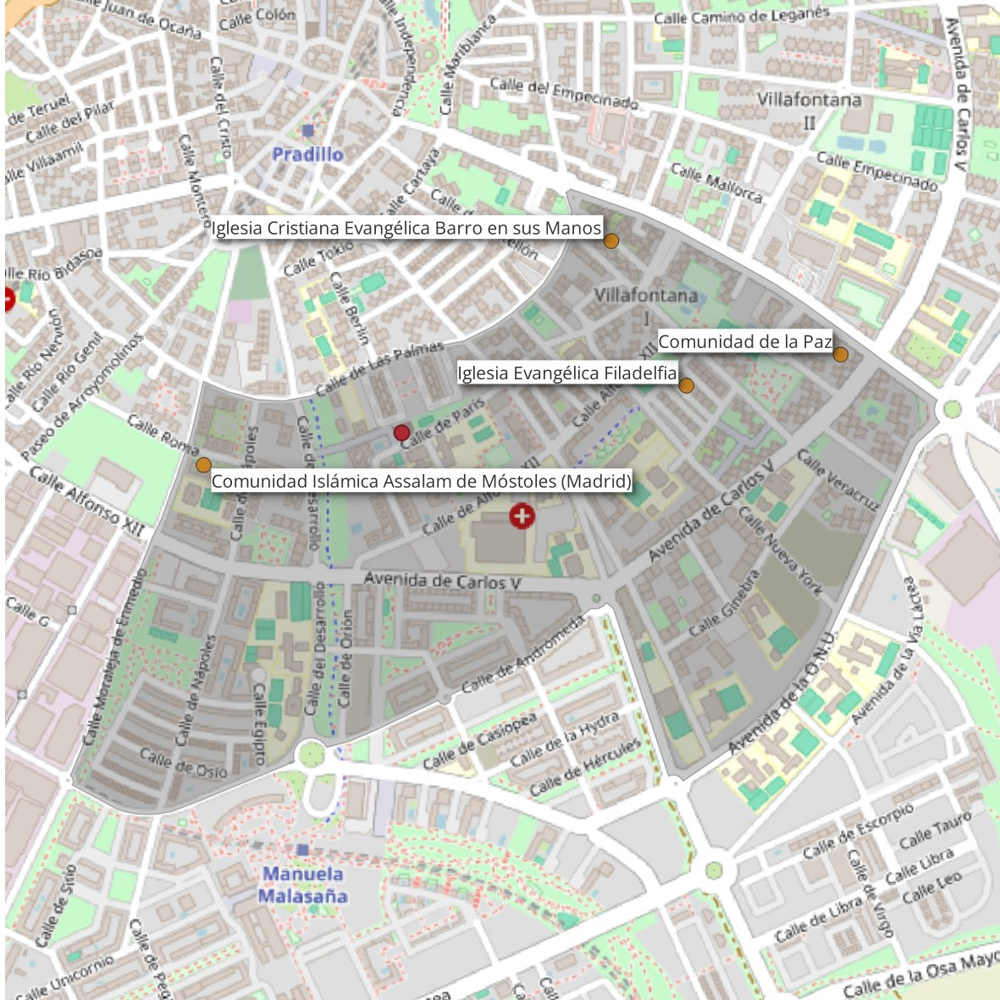
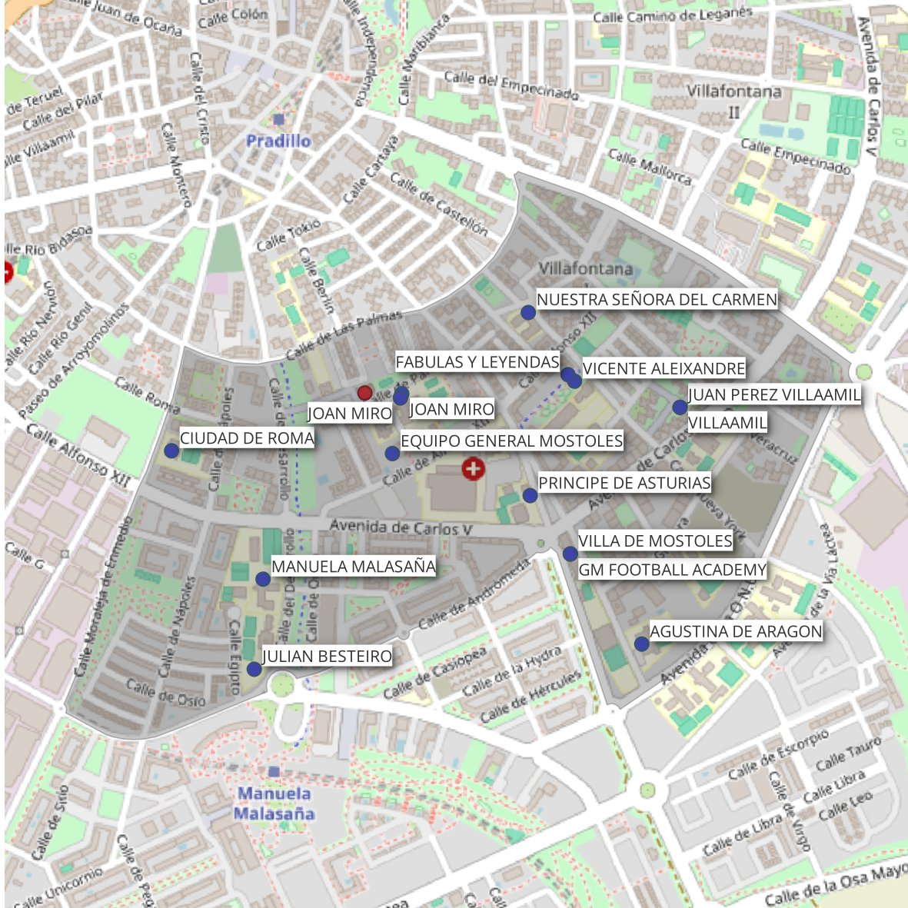

Puntos de interés en el territorio parroquial
Parroquia Virgen del Carmen (Móstoles) · Arciprestazgo de Móstoles
Entidades religiosas no católicas

4 entidades religiosas no católicas en el territorio de la parroquia.
Evangélicos (3)
- Comunidad de la PazCalle Simón Hernández 82, Móstoles
- Iglesia Cristiana Evangélica Barro en sus ManosCalle Estocolmo 3 Local, Móstoles
- Iglesia Evangélica FiladelfiaCalle Bolivia 4 Local 1, Móstoles
Musulmanes (1)
- Comunidad Islámica Assalam de Móstoles (Madrid)Calle Roma 4, Móstoles
Fuente: Registro de Entidades Religiosas del Ministerio de la Presidencia, Justicia y Relaciones con las Cortes. Situación en el mapa: dirección geocodificada con CartoCiudad (IGN) o Nominatim (OpenStreetMap).
Centros educativos

15 centros educativos en el territorio de la parroquia (público: 12, privado concertado: 2, privado: 1).
| Centro | Tipo | Titularidad | Domicilio | Web |
|---|---|---|---|---|
| AGUSTINA DE ARAGON | Centro público de educación de personas adultas | Público | Calle Camino de Humanes, 63, 28936 Móstoles | Página web |
| CIUDAD DE ROMA | Colegio de educación infantil y primaria | Público | Calle Moraleja de Enmedio, 21, 28935 Móstoles | Página web |
| EQUIPO GENERAL MOSTOLES | Equipo de orientación educativa y psicopedagógica. General. | Público | Calle París, 9, 28938 Móstoles | Página web |
| FABULAS Y LEYENDAS | Escuela infantil | Público | Calle Nueva York, 12, 28938 Móstoles | Página web |
| GM FOOTBALL ACADEMY | Centro autorizado de enseñanzas deportivas grado medio y superior | Privado | Calle Camino de Humanes, 40, 28938 Móstoles | Página web |
| JOAN MIRO | Escuela infantil | Público | Calle París, 7, 28938 Móstoles | Página web |
| JOAN MIRO | Colegio de educación infantil y primaria | Público | Calle París, 3, 28938 Móstoles | Página web |
| JUAN PEREZ VILLAAMIL | Colegio de educación infantil y primaria | Público | Calle Veracruz, 34 duplicado, 28936 Móstoles | Página web |
| JULIAN BESTEIRO | Colegio de educación infantil y primaria | Público | Calle del Desarrollo, 52, 28935 Móstoles | Página web |
| MANUELA MALASAÑA | Instituto de educación secundaria | Público | Calle del Desarrollo, 50, 28938 Móstoles | Página web |
| NUESTRA SEÑORA DEL CARMEN | Centro privado de educación infantil, primaria y secundaria | Privado concertado | Calle Chile, 4, 28938 Móstoles | Página web |
| PRINCIPE DE ASTURIAS | Colegio de educación infantil y primaria | Público | Calle Camino de Humanes, 36, 28938 Móstoles | Página web |
| VICENTE ALEIXANDRE | Colegio de educación infantil y primaria | Público | Calle Nueva York, 14, 28938 Móstoles | Página web |
| VILLA DE MOSTOLES | Centro privado de educación infantil, primaria y secundaria | Privado concertado | Calle Camino de Humanes, 40, 28938 Móstoles | Página web |
| VILLAAMIL | Escuela infantil-casa de niños | Público | Calle Ginebra, s/n, 28937 Móstoles | Página web |
Fuente: registro de centros educativos de la Comunidad de Madrid. Solo se recogen los centros en situación de alta.